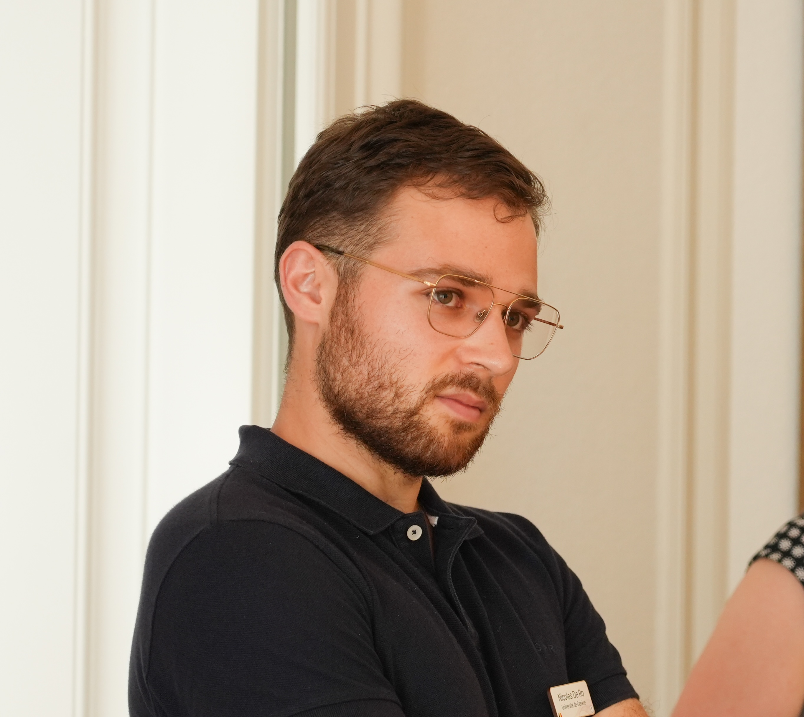

I am an Assistant Professor in the School of Information Sciences and the Coordinated Science Laboratory at the University of Illinois Urbana-Champaign. I am also affiliated with the Siebel School of Computing and Data Science (formerly the Department of Computer Science) and the Department of Electrical & Computer Engineering.
Previously, I received my Ph.D. in Computer Science at Max Planck Institute for Informatics and my B.S. in Electronic Information Engineering at Tianjin University. I also spent time at Johns Hopkins, Oxford VGG, and National University of Singapore.
My research lies at the intersection of computer vision and machine learning, with a special focus on building intelligent visual systems that are continual and data-efficient. My research interests include continual learning, few-shot learning, semi-supervised learning, generative models, 3D geometry models, and medical image analysis.
Boulevard d’Yvoy 16, 1205 Genève
Office: SC1 215
Department of Theoretical Physics website